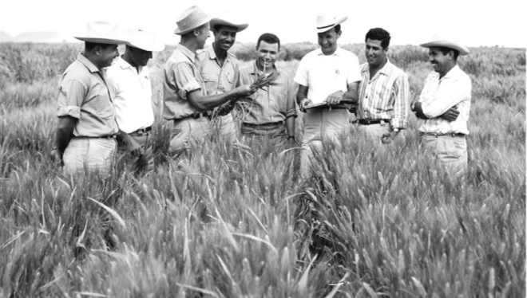

DR. norman Borlaug
the man who save a billion live

Dr. Norman Borlaug/the third from the left, trains biologists in mexico on how to increase wheat yeidling-part of his life-long war on hunger.
Here is a timeline of Dr.Borlaug life
1914-Born in cresco,Iowa
1933-leave his family farm to attend the university of minnesota,
Thanks to a Depression era program knows as the "National Youth
Administration"
1935-has stop school and save up more money.works in the civilian
conservation corps,helping starving American."I saw how food changed
them",he said."All of this left scars on me
1937-Finishes university and takes a job in the US Forestry service
1938- Marries wife of 69 years Margret Gibson.Gets laid off due to
budget cuts. Inspired by Elvin Charles Stakman,he returns to school
study under Stakman,who teaches him about breading pest-resistance
planets
1941-Tries to enroll in the military after the pearl Harbor attack,
but is rejected.Inside,the military asked his lab to work on
waterproof glue,DDT to control malaria,disinfectant,and other applied
science
1942-Receives a Ph.D. in Genetic and plant pathology
1944-Rejects a 100% salary increase from Dupont,leaves behind his
pregnant wife,and files to mexico to head a new plant pathology
program.over 16 years,his team breads 6,000 different strains of
disease resisted wheat-including different varieties of each major
climates on earth
1945-Discovers a way to grown wheat twice each season doubling wheat
yields
1953-crosses a short,sturdy dwarf breed of wheat with a high-yeidling
America breed, Creating a strain that responds well to fertilizer. It
goes on to provide 95% of mexico's wheats
1962-visits Delhi and bring his high-yielding strain of wheat to the
Indian subcontinent in time to help matigate mass starvation due to
rapidly expanding population
1970-received the nobel peace prize
1983-help seven African countries dramatically increase their maize
and sorghum yields
1984-become a distinguished professor at Texas A&M university
2005-states "we will have a double of the world food supply by 2050."
Argues that genetically modified crop are the only way we can meet the
demande, as we run out of arable land.says that GM cropss are not
inherently dangerous because"we've been genetically modifying plants
and animal for a long time. long before we called it science,people
were selecting the best breeds
2009-dies at the age of 95